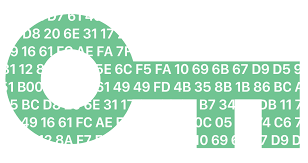

Bienvenue dans Mon Univers
Je suis Yosri Khiari, un auditeur passionné de cybersécurité, sculptant la sécurité numérique avec créativité et précision.
Découvrez mes projets uniques qui repoussent les limites de la cybersécurité.
Projets en Cybersécurité

Chiffrement et Cryptographie
Réalisation d'un système de chiffrement avancé utilisant l'algorithme AES. Application de concepts de cryptographie moderne pour assurer la confidentialité des données sensibles dans les communications.
Technologies utilisées : AES, RSA, Diffie-Hellman
Destruction Systématique des Fichiers
Développement d'une solution de destruction sécurisée des fichiers pour garantir l'élimination permanente des données confidentielles. Utilisation d'algorithmes de destruction sécurisée conformes aux normes DoD 5220.22-M.
Technologies utilisées : Gutmann method, DoD 5220.22-M